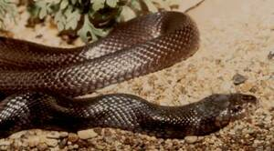
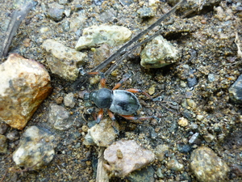
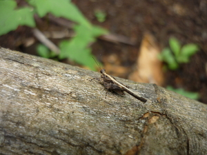

uled   
/ʔulɔd/
n.
“snake/worm/insect”
1.
n.
a generic name of all kinds of snake including the insects, and worms
Wrd.Gloss: worm
Ka seini ne lalag iyan se langun ne kalasiyan te malimerang iling te sapering, uled te suli, liwwati, bituk, wey ke derakel ma nasabeka rè ka umew te seini.
Nakakita a te makalawag ne uled gabiì.
I saw a brown worm yesterday.
Eng. intestinal worm; worm
Tag. ahas; insekto; buláti; úlay
Ceb. watí?
Ilo.: ariet
Tigwanon: ʔuled
WBM: ʔuled
Ilianen: ʔuled
Cotabato Manobo: ʔuled
Dibabawon: ʔued
Binukid: ʔuled 'worm, insect'
Obo: ʔuad
Proto: ʔuled
OCM: Fauna (136), Theory of Disease (753)
DDP: Types of animals (1.6.1), Snake (1.6.1.3.1), Insect (1.6.1.7), Small animals (1.6.1.9)
Online dict status: -
Usage level: B
2.
n.
a generic name of all kinds snake
Wrd.Gloss: snake
Eng. snake
Tag. áhas
Ceb. hálas
Ilo.: úleg
OCM: Fauna (136)
DDP: Snake (1.6.1.3.1)
Online dict status: -
Usage level: B
3.
n.
(a slender, crawling or creeping) animal (without legs)
Wrd.Gloss: insect
Genr. mananap
Spec. bakesan —python
Spec. dulepu —cobra
Spec. liwatì
—earthworm
Spec. mammiley
Spec. dumeraal
Spec. palees
Spec. dumelayang
Spec. tabaring
Spec. tei_te_asu
Spec. langey
Spec. mammegkit
Spec. lipettuk
Spec. bulilii
Spec. lametik
Spec. wakè
Spec. tingasew
Spec. pulangi
Spec. lapinig
Eng. creeping animal; creepy-crawly
Tag. uód
Ceb. ulod
Ilo.: iggés
OCM: Ethnozoology (825)
DDP: Types of animals (1.6.1), Snake (1.6.1.3.1), Insect (1.6.1.7)
Online dict status: -
Usage level: B
4.
n.
lice
Wrd.Gloss: lice
Eng. lice
Ceb. kutu
OCM: Fauna (136)
DDP: Snake (1.6.1.3.1)
Online dict status: -
Usage level: B
Updated by: RJH,TME,QDL,NJK,QDL
Last updated: 19/Jan/2010
"uled" in healthbook "Migpamawian ni Inuk ka sumbaley rin ne migpangaliskis"
"uled" in healthbook "Migpamawian ni Inuk ka sumbaley rin ne migpangaliskis"
"uled" in healthbook "Migpamawian ni Inuk ka sumbaley rin ne migpangaliskis"
"uled" in healthbook "Migpamawian ni Inuk ka sumbaley rin ne migpangaliskis"
"uled" in healthbook "Migpamawian ni Inuk ka sumbaley rin ne migpangaliskis"
This page last updated: 28-Dec-2019
Copyright © 2009-2014, Matigsalug Language Christian Association, Inc